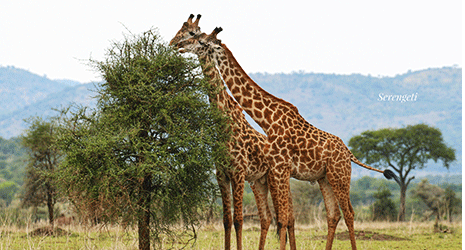
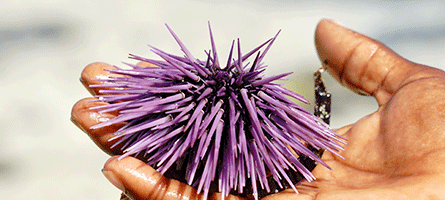
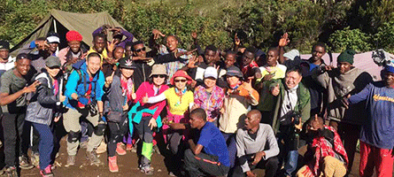

About Tanzania
Tanzania
Tanzania is a politically stable and generally safe country. In this amazing land, wildlife, beaches, ruins, Mt Kilimanjaro, friendly people, fascinating cultures… Tanzania has all these and more wrapped up in one adventurous, welcoming package.
Captivating Cultures
Wherever you go, it has many opportunities to get to know Tanzania’s people and cultures. Just meet red-cloaked Maasai warriors and spend time with the semi-nomadic Barabaig near Mt Hanang. Experience the hospitality of a local meal or the rhythms of traditional dance. Tanzanians, with their characteristic warmth and politeness, and the dignity and beauty of their cultures, you will have a memorable visit. KiliMaster have thoroughly knowledge about Tanzania and we can tailor your trip according to different requirements, we ensure that you can certainly get what you want and worth what you paid for.
Wonderful Wildlife
Tanzania has more lions than the whole of the rest of Africa put together and is one of the best countries to safari in. The country ranges from high mountain rain forest to Brachystegia woodland to open savannah and plains and swamps. Tanzania is the home to some of Africa’s finest national parks and game reserves, including the Selous, Tarangire, Ngorongoro, Serengeti, Ruaha, Katavi and Rungwa. Two of them are Unesco World Heritage Sites. Tanzania is one of the last countries to offer remote wilderness, huge game populations and traditional safari camps under canvas.
Idyllic Beaches
Tanzania’s Indian Ocean coastline is a magical, with tranquil islands and sleepy coastal villages steeped in centuries of Swahili culture. You can have a wonderful beach holidays on Zanzibar Island, interesting activities including kite-surfing, diving and cultural tours. You can also immerse yourself in languid coastal rhythms, and sit beneath billowing sails on a wooden dhow, to have a moment just spend with yourself.
Mt Killimanjaro
Mt Kilimanjaro is the highest peak in Africa and one of the world’s highest freestanding mountains. As it is called” the roof of Africa”, climbers by the thousands venture here to challenge themselves on its muddy slopes, rocky trails and slippery scree. The rewards? The thrill of standing at the top of Africa, magnificent views of Kilimanjaro’s ice fields, and witnessing the sunrise illuminating the plains far below.
